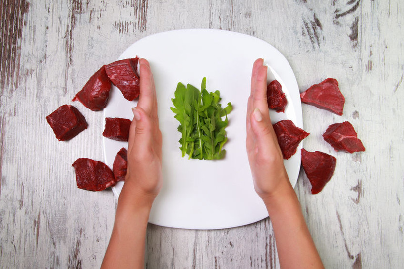
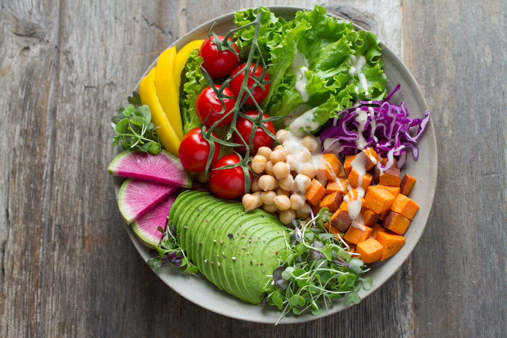

Ogólne podsumowanie
Przeciwnicy diety wegańskiej (a czasami również diety wegetariańskiej) uważają, że dostarczenie odpowiedniej ilości białka za pomocą takiego sposobu odżywiania jest bardzo trudne. Prawdą jest, że w niewłaściwie zbilansowanej diecie wegańskiej może brakować wielu ważnych składników odżywczych. Jednak warto zaznaczyć, że spore ilości białka znaleźć można w nasionach roślin strączkowych, przede wszystkim w ciecierzycy, grochu, soi oraz fasoli. Źródłem białka w diecie wegańskiej może być także tofu.

Badania naukowe nad weganizmem potwierdzają, że osoby na takiej diecie w porównaniu do osób spożywających produkty mięsne znacznie rzadziej zapadają na choroby układu krążenia, nowotwory, cukrzycę oraz choroby nerek i żołądka. Prawidłowo zbilansowana dieta wegańska dostarcza spore ilości nienasyconych kwasów tłuszczowych, podczas gdy w diecie mięsnej dominują tłuszcze nasycone przyczyniające się do m.in. raka, miażdżycy oraz chorób serca.

Druga grupa produktów, na które także trzeba zwrócić szczególną uwagę, to źródła węglowodanów złożonych – produkty pełnoziarniste, a więc chleb, makarony, ryż, różnego rodzaju kasze, płatki. Tych powinno być w diecie nieco mniej niż warzyw i owoców.
Pamiętać musimy także o roślinnych źródłach białka (np. fasola, soja, cieciorka, soczewica, groch), nienasyconych kwasach tłuszczowych (orzechy, pestki, nasiona, ziarna i oleje roślinne) oraz absolutnej podstawie każdej diety, jaką jest odpowiednie nawodnienie.
